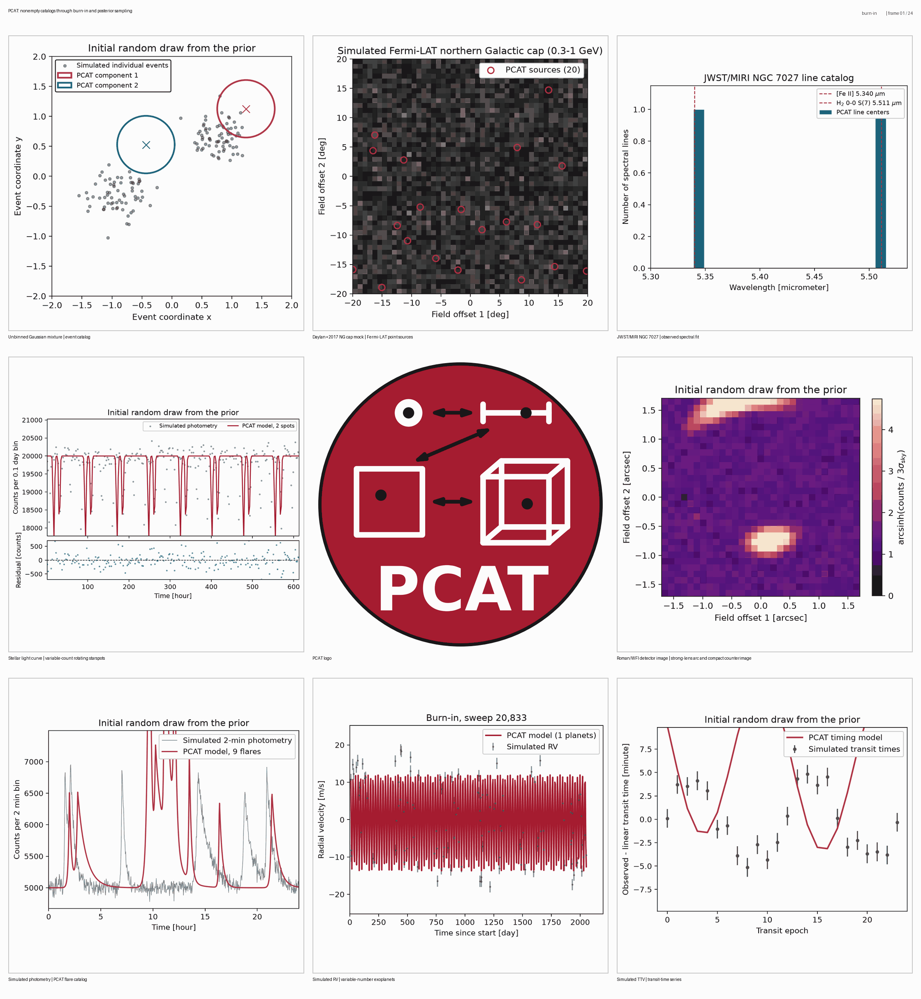
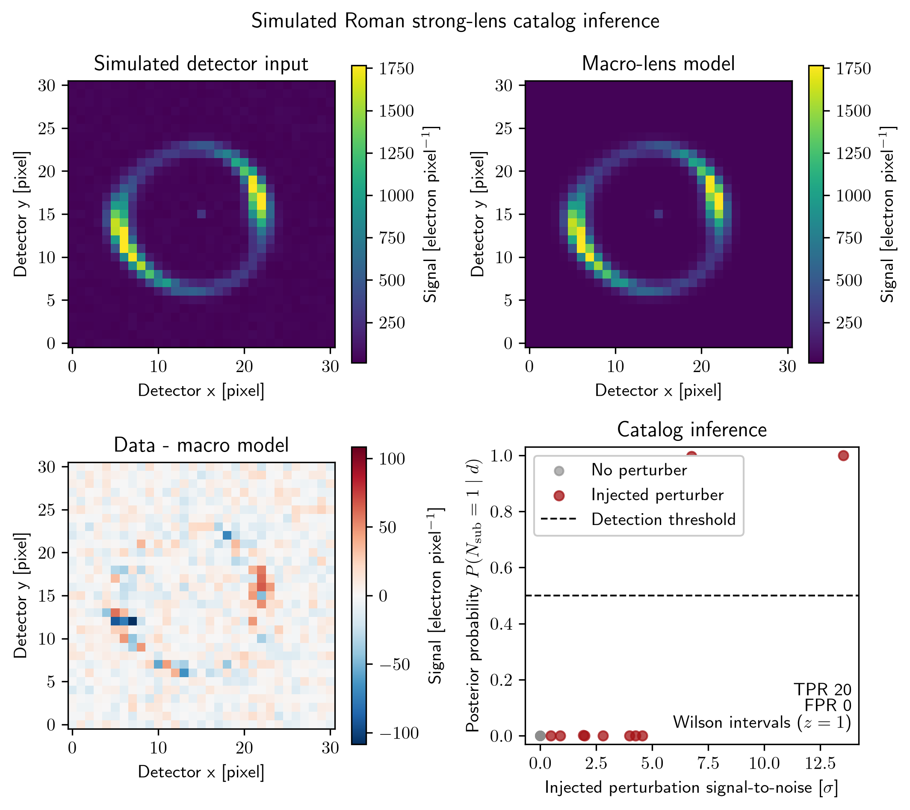
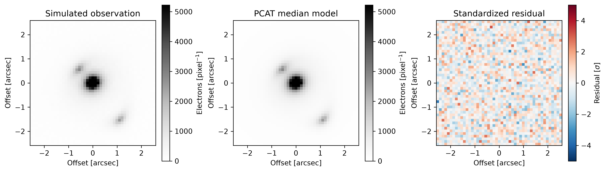
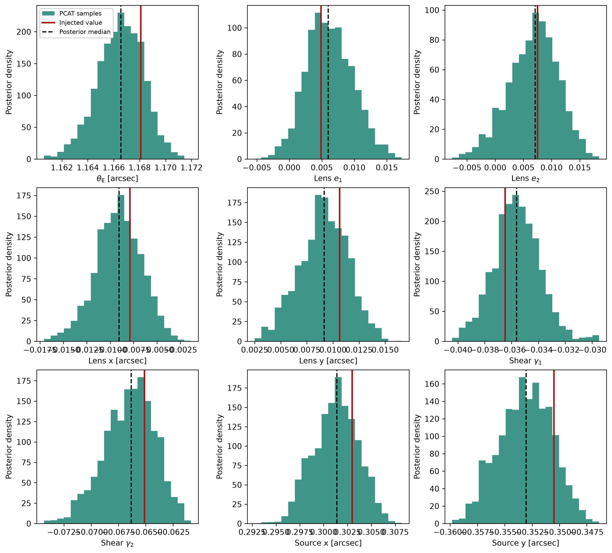
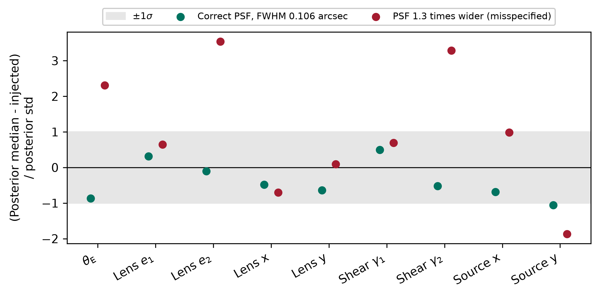
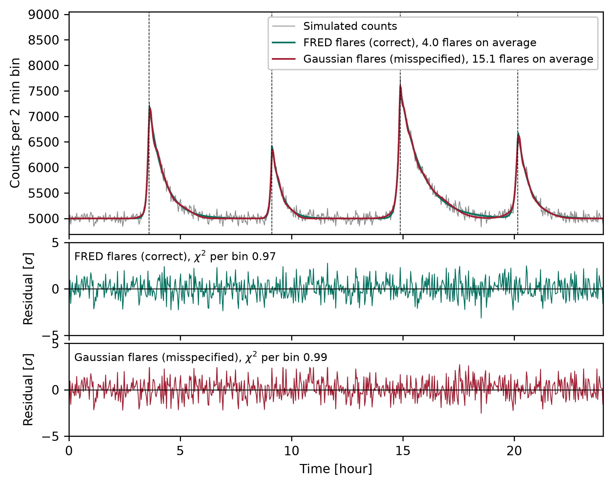
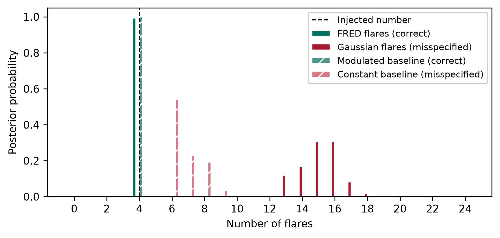
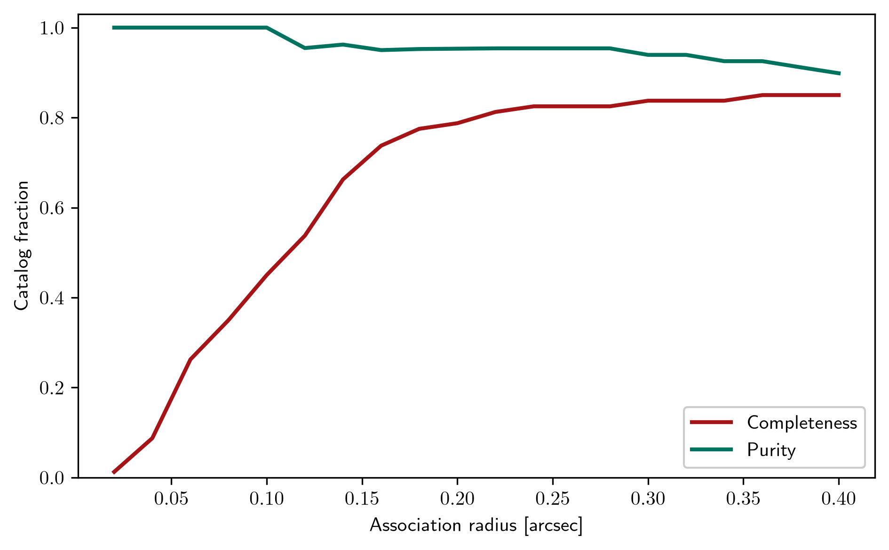
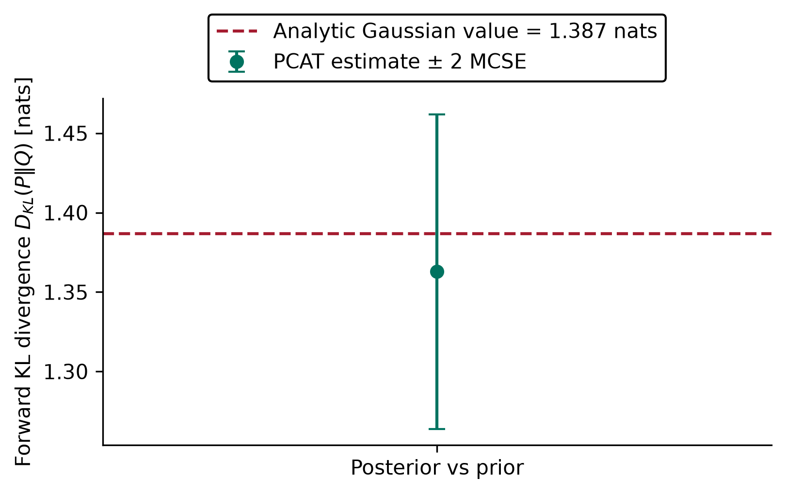
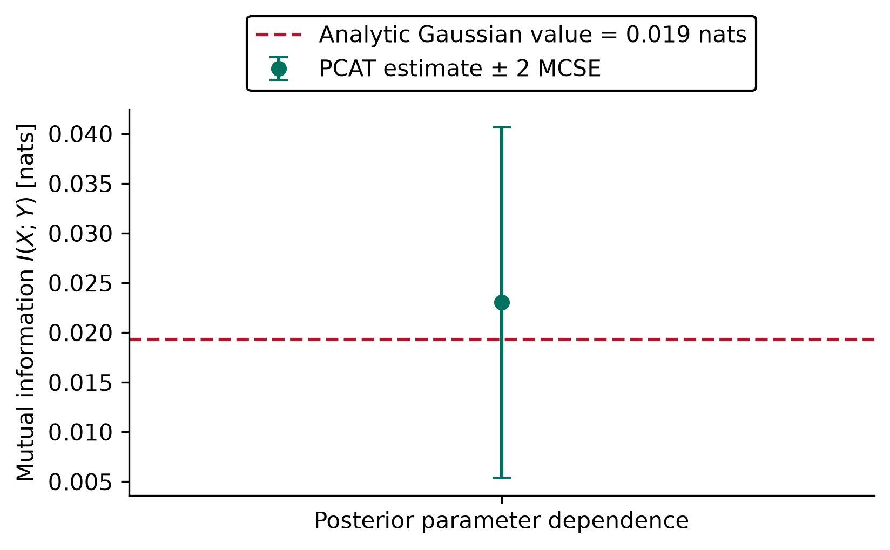

Examples
Every Python example under examples/ has a corresponding Jupyter notebook
in the same directory. Open the notebook in VS Code or Jupyter to run it
interactively. The Python scripts remain available for automated and command-line
runs. The batch-command notebook lists its external commands without executing
them.
Pipeline demonstrations
chandra_point_source_catalogCompact Chandra-style point-source detection with simulated data.
gaussian_mixture_catalogTwo-dimensional variable-width Gaussian-mixture inference with genuine birth and death transitions.
unbinned_gaussian_mixturePCAT fits the coordinates of 140 individually simulated events directly, without spatial count bins. Its notebook runs the sampler, reads the saved center posterior, and displays the generated event-catalog frames.
transit_timing_variationsPCAT fits a sinusoidal timing perturbation to 24 individually simulated mid-transit times. Its notebook reads the timing posterior and displays the sampled model against the simulated timing residuals.
neural_proposal_efficiencyCompares prior, data-informed, and neural birth proposals on held-out simulated radial-velocity scenes. Its companion notebook runs the actual training-and-sampling smoke path and displays the saved summary and figure. Two short chains per method check execution without establishing convergence or an efficiency advantage. Choose a fresh
--run-idfor each comparison. Existing benchmark artifacts or configured chain outputs are rejected before training starts. Use one process per run ID. Constant count traces receive zero ESS as a conservative reporting convention, including short traces. Missing or nonfinite samples raise an error. These conventions do not establish convergence. Efficiency ratios with a zero-ESS baseline are undefined and reported asNaN. Their bootstrap intervals remain undefined and provide no evidence of an efficiency gain. Bootstrap inputs must be one-dimensional with a positive integer draw budget. Empty, masked, or nonfinite comparisons remain undefined without resampling or dropping scenes. Valid seeded intervals are unchanged. Identical constant count chains have undefined R-hat (NaN), while disagreeing constant chains retain infinite R-hat. Efficiency claims require finite per-scene R-hat values for both compared methods. Gain claims require unmasked, aligned per-scene evidence and ordered two-bound confidence intervals. Missing or malformed inputs fail the claim check without filling values, dropping scenes, or changing the thresholds. ESS and R-hat share missing-sample validation. R-hat checks each full input trace before selecting equal-length tails, preserving the existing calculation for valid unequal-length chains. Aggregate count R-hat medians retain every validation scene. An undefined per-scene value leaves the corresponding median undefined, without dropping scenes or emitting an all-undefined median warning. Per-chain call counts must be positive integers, elapsed times finite and positive, and training overhead finite and nonnegative. Missing overhead retains its zero default. Invalid costs are rejected before aggregation, and integer call totals are accumulated without truncation. This benchmark’s capped ESS estimates must be finite real scalars from zero through the corresponding trace length. Invalid per-chain metadata is rejected without clipping or recomputation, preserving valid fractional and zero effective sample sizes. Per-chain birth/death acceptance rates must be finite real scalars in [0, 1]. Invalid rates are rejected before averaging, preserving valid zero and unit rates and the existing per-chain mean without clipping. Saved HDF5 acceptance flags are validated before Boolean conversion, with aligned flattened traces and finite nonnegative integer proposal IDs. Nonbinary flags or invalid IDs raise an error. Other integer move IDs and the existing zero-attempt rate convention remain supported. Posterior counts and log-likelihood samples must form nonempty aligned flattened traces. Counts are checked for integrality and the supported range before conversion, and likelihood samples must be finite real values. Invalid traces fail before metric calculation, without repairing or rewriting the saved HDF5 output. Count distributions retain equal per-chain weights. Input vectors must cover all supported counts, contain finite real probabilities in [0, 1], and sum to one within floating-point rounding tolerance. Missing or invalid distributions are rejected without clipping or renormalization.python examples/neural_proposal_efficiency/neural_proposal_efficiency.py --smoke --run-id fresh_comparison
simulated_hst_strong_lensHubble Space Telescope Wide Field Camera 3 image inference with lens mass, foreground lens-galaxy emission, source emission, and lensed emission.
python examples/simulated_hst_strong_lens/simulated_hst_strong_lens.pysimulated_rubin_cluster_lensSimulated Rubin-like cluster-scale lens with a Gaussian point-spread function. The notebook samples the Einstein radius and source position with PCAT’s Poisson image likelihood, then shows the fitted image, residuals, and posterior parameter distributions. It does not analyze Rubin observations.
rubin_dp1_confirmed_strong_lensesRubin Science Platform notebook for real Data Preview 1 imaging. It queries confirmed SIMBAD lens-system classifications, checks exact DP1 image footprints, retrieves every resulting deep-coadd cutout, displays the full matched sample and a separate multiband figure for each lens system, and passes each usable cutout to PCAT. It also compares the posterior Einstein radii from every successful fit in one figure. DP1 requires Rubin data rights, and SIMBAD does not constitute a complete census of lenses.
Run the maintained local smoke suite with:
python examples/run_all_examples.py
The suite runs the compact image and publication-inspired simulations, the stellar-flare and Voigt smoke configurations, an unbinned Gaussian mixture, simulated Roman strong-lens posterior images, simulated radial-velocity and transit-timing series, the public JWST/MIRI spectrum, the proposal profiler, and the sampler comparison. The JWST example may retrieve public MAST data. Notebooks requiring authenticated services or interactive inspection are excluded.
Eight changing inference views are synchronized with a static PCAT logo panel. Each data view starts from a nonempty catalog, follows burn-in for the first third of the animation, and shows posterior samples for the remaining two thirds. The views show an unbinned Gaussian mixture, point sources in a simulated Daylan et al. (2017) Fermi-LAT northern Galactic cap, the observed JWST/MIRI NGC 7027 spectral fit, a stellar light curve with a variable number of rotating starspots, simulated Roman/WFI lensed arcs, stellar flares, radial velocities, and transit times. Time-series and spectral axes remain fixed. The GIF uses one shared color palette.


Publication and instrument examples
daylan+2017_fermi_point_sourcesScaled mock-catalog reproduction of Daylan, Portillo, and Finkbeiner (2017). The smoke mode preserves the inference pattern while reducing the source count and chain length.
python 'examples/daylan+2017_fermi_point_sources/daylan+2017_fermi_point_sources.py' --smoke --fresh
daylan+2018_strong_lens_subhalosSimulated Hubble Space Telescope Wide Field Camera 3 strong-lens analysis comparing a variable subhalo catalog with a fixed one-subhalo fit.
python 'examples/daylan+2018_strong_lens_subhalos/daylan+2018_strong_lens_subhalos.py' --smoke python 'examples/daylan+2018_strong_lens_subhalos/daylan+2018_strong_lens_subhalos.py' --smoke --one-subhalo
voigt_spectral_line_catalogTransdimensional detection of an unknown number of Voigt-profile emission lines in simulated spectral data.
python examples/voigt_spectral_line_catalog/voigt_spectral_line_catalog.py --configuration nomi
jwst_miri_ngc7027_line_catalogTransdimensional Voigt-line catalog for the public James Webb Space Telescope (JWST) MIRI Medium Resolution Spectrometer spectrum of NGC 7027 from program 1523. The script downloads the level-3 spectrum from the Mikulski Archive for Space Telescopes when it is absent, maps the measured flux and uncertainty to effective Poisson counts, and fits a line catalog over 5.30–5.535 microns.
python examples/jwst_miri_ngc7027_line_catalog/jwst_miri_ngc7027_line_catalog.py --numbswep 200000


variable_number_exoplanets_radial_velocitySimulated six-year, two-instrument radial-velocity series containing three injected planets. PCAT samples a catalog with zero to five Keplerian signals, using periodogram-weighted birth and jump proposals with Hastings corrections. Instrument offsets are marginalized analytically and stellar jitter on a 24-point log grid. All data are simulated. The full run uses 100,000 sweeps.
--smokeruns 1,000 sweeps as a pipeline check, not a convergence test.python examples/variable_number_exoplanets_radial_velocity/variable_number_exoplanets_radial_velocity.py --numbswep 100000 python examples/variable_number_exoplanets_radial_velocity/variable_number_exoplanets_radial_velocity.py --smoke


variable_number_stellar_flaresSimulated one-day, TESS-like light curve with fast-rise, exponential-decay flares. PCAT fits a variable catalog of native FRED bursts with independent peak amplitude, peak time, rise time, and decay time.
python examples/variable_number_stellar_flares/variable_number_stellar_flares.py --smoke


variable_number_stellar_spotsSimulated rotating-star photometry with three injected dark spots. PCAT fits a zero-to-five-spot catalog using a fixed 3.2-day rotation period while sampling each spot’s phase, depth, and width.
python examples/variable_number_stellar_spots/variable_number_stellar_spots.py --smoke
roman_strong_lens_perturber_catalogSeeded Roman strong-lens population benchmark and catalog-detection diagnostic.
python examples/roman_strong_lens_perturber_catalog/roman_strong_lens_perturber_catalog.py
The four panels trace one simulated detector image through the macro-lens model and residual, then summarize catalog posterior probabilities across the seeded lens population.
mejiro_roman_strong_lensmejiro (Wedig et al.) simulates the SLSim galaxy-galaxy lens
SampleGGin the Roman WFI F129 band with its Roman PSF width, zero point, and sky. PCAT samples the SIE lens, external shear, and source position from one Poisson exposure with the lenstronomy model that mejiro built. Four chains start from prior draws and recover all nine injected parameters within about one posterior standard deviation, with a maximum Gelman-Rubin R-hat of 1.1. Requires an editable mejiro install androman-technical-information.python examples/mejiro_roman_strong_lens/mejiro_roman_strong_lens.py

A second fit assumes a PSF 30% wider than the one mejiro used. Its posteriors are as narrow as those of the correct fit, yet the Einstein radius, lens ellipticity, external shear, and source position move by up to 3.5 posterior standard deviations from the injected values.

mismodeling_flare_catalogFour flares with a fast rise and exponential decay (FRED) are injected into two simulated one-day light curves, one with a constant quiescent level and one with a 2% rotational modulation. Each light curve is fit with the model that generated it and with a misspecified model, using identical priors and samplers. The correct fits recover four flares with a posterior probability of at least 0.94. Symmetric Gaussian flares need about 15 components to reproduce the asymmetric decays, with a residual consistent with noise. A constant quiescent level turns the modulation into about 6.5 flares. Both misspecified posteriors are narrow and exclude the injected number. The example also compares standardized Pearson-residual distributions with a standard Gaussian and total chi-squared values from posterior-predictive Poisson replicates with a Gaussian approximation. The displayed upper-tail fraction is a descriptive reference, not a formal p-value.
python examples/mismodeling_flare_catalog/mismodeling_flare_catalog.py


The shape comparison overlays a standard Gaussian on the observed Pearson residuals and a moment-matched Gaussian on total chi-squared values from posterior-predictive Poisson replications. This preview was generated in smoke mode and demonstrates the diagnostic, not chain convergence.
fermi_lat_pg1553_event_filterFermi Large Area Telescope event-filter configuration for PG 1553+113. This utility requires the Fermi Science Tools and local mission data.
portillo+2017_crowded_sdss_m2Simulated Sloan Digital Sky Survey crowded-field deblending patterned after Portillo et al. (2017).
feder+2020_multiband_sdss_deblendingSimulated multiband Sloan Digital Sky Survey deblending patterned after Feder et al. (2020).
butler+2022_spire_sz_component_separationSimulated Herschel SPIRE point-source and Sunyaev-Zeldovich component separation patterned after Butler et al. (2022).
feder+2023_point_diffuse_spireSimulated joint point-source and diffuse-emission inference patterned after Feder et al. (2023).
hall+2026_herschel_dsfg_multiplicitySimulated Herschel dusty star-forming galaxy multiplicity inference patterned after Hall et al. (2026).


Analysis utilities
image_forward_modelDeterministic image formation with a normalized Gaussian point-spread function and uniform background. This utility uses a simulated two-source scene. It performs no inference and draws no Poisson noise.
python examples/image_forward_model/image_forward_model.py --typefileplot png

kl_divergence_gaussianPCAT samples a conjugate Gaussian posterior and estimates the forward KL divergence to its Gaussian prior. The example compares the Monte Carlo estimate and its autocorrelation-aware uncertainty with the analytic value.
python examples/kl_divergence_gaussian/kl_divergence_gaussian.py --smoke

sampler_comparison_emcee_dynestyControlled simulated radial-velocity comparison of PCAT, emcee, and dynesty. The fixed-dimensional sinusoid uses the same likelihood and priors for all three, and compares posterior agreement, mode recovery, effective sampling rate, likelihood calls, and evidence. The variable-dimensional two-planet experiment compares one PCAT run over zero to three planets with separate dynesty evidence calculations per count. emcee is excluded there because it cannot compare dimensions. Count-posterior agreement, period recovery, and computational costs make PCAT’s transdimensional capability explicit without claiming that one sampler is universally faster.
python examples/sampler_comparison_emcee_dynesty/sampler_comparison_emcee_dynesty.py --part both


proposal_profilingSimulated Voigt-line run reporting proposal attempts, acceptance fractions, time per sweep, and the recorded timing breakdown for major pipeline phases.
python examples/proposal_profiling/proposal_profiling.py --numbswep 20000
proposal_state_animationShort simulated Voigt-line run producing two complementary animations. The retained-state sequence follows the configured plotting cadence. The every-candidate sequence labels within-model Gaussian, DE-MC, and Student-t steps as well as birth, death, split, merge, and jump moves before the accept/reject decision. The run reports proposal counts and is long enough to exercise the complete categorical move roster. The retained-state animation starts after burn-in. The candidate animation includes all 120 sweeps.
python examples/proposal_state_animation/proposal_state_animation.py --numbswep 120


burn_in_strategiesSeeded comparison of fixed and adaptive Gaussian steps, likelihood-tempered burn-in, and an adaptive Student-t within-model proposal on correlated- Gaussian and equal-weight bimodal targets. The figures report retained samples, acceptance, effective sample rate, target-summary error, runtime, and the recorded inverse-temperature schedule. Student-t steps cross the modes more often in the bimodal target but are not more efficient on every target.
python examples/burn_in_strategies/burn_in_strategies.py --numbswep 1200
population_gridSeeded simulated populations used to demonstrate PCAT’s marginal and pairwise posterior plotting. These arrays are illustrative rather than observations.
legacy_external_analysis_commandsCommand-reference notebook for external analyses. It records commands but does not execute them.
catalog_association_completeness_puritySeeded completeness and purity calculation for coordinate-and-value catalog matching across a range of association radii.
python examples/catalog_association_completeness_purity/catalog_association_completeness_purity.py
kl_divergence_gaussianPCAT samples a two-parameter conjugate Gaussian posterior. The same chains estimate posterior-to-prior KL divergence and mutual information between posterior parameters, using their normalized analytic densities. Each estimate is compared with its exact Gaussian value. The example reports autocorrelation-aware Monte Carlo standard errors rather than claiming that agreement alone demonstrates convergence.
python examples/kl_divergence_gaussian/kl_divergence_gaussian.py



Interpreting examples
Generated examples are deterministic pipeline demonstrations unless their README explicitly states otherwise. Synthetic outputs validate computation and visualization but do not constitute measurements of real astrophysical systems. The daylan+2017_fermi_point_sources README distinguishes its scaled simulation from the archival Fermi-LAT analysis in the publication.